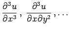

Inhalt Index DeskTop Bronstein

 Differentialrechnung Differentiation von Funktionen von mehreren Veränderlichen Vollständiges Differential und Differentiale höherer Ordnung Ableitungen und Differentiale höherer Ordnungen
Differentialrechnung Differentiation von Funktionen von mehreren Veränderlichen Vollständiges Differential und Differentiale höherer Ordnung Ableitungen und Differentiale höherer Ordnungen


Die partielle Ableitung 2. Ordnung einer Funktion kann sowohl nach der gleichen Variablen gebildet werden, wie die erste Ableitung, d.h. , als auch nach einer anderen Variablen, d.h. . Im zweiten Falle spricht man von einer gemischten Ableitung. Der Wert einer gemischten Ableitung ist für gegebene Werte von x1 und x2 unabhängig von der Reihenfolge der Ableitungsbildung, wenn die gemischte Ableitung in dem betrachteten Punkt stetig ist. Man spricht vom SCHWARZschen Vertauschungssatz:
| (6.45) |
Partielle Ableitungen höherer Ordnung, wie z.B.  sind analog definiert.